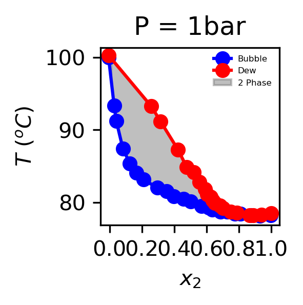
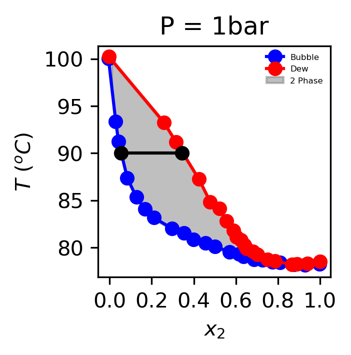
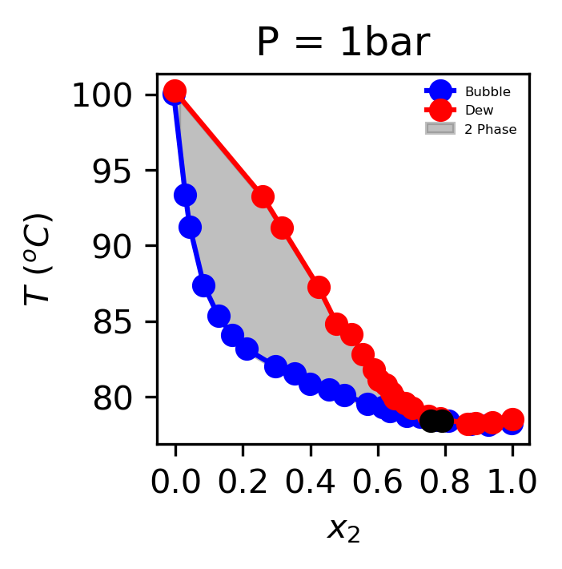
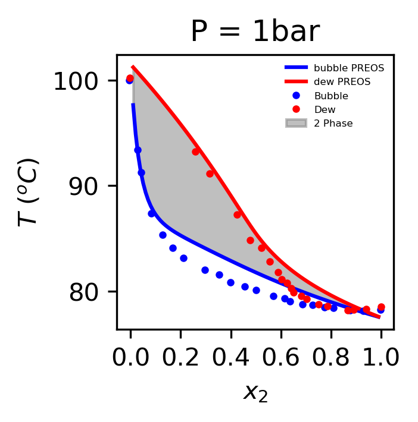
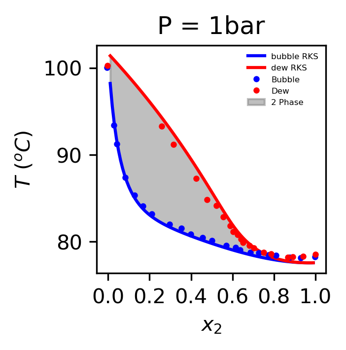

Equilibrium of Mixtures#
Fugacity of species i in a mixture#
The last ingredient that completes our thermodynamic description of mixture properties is describing vapor liquid equilibrium of mixtures. If we imagine a mixture inside an isolated container that undergoes a transition from a vapor phase to a liquid phase, then we can imagine that there will be two phases in coexistance.
The starting point for this is to adopt the approach from Ch 7.
from this, and employing the definition of the partial molar property, we conclude that:
As in the pure phase case, the partial molar volume is the more useful relationship:
In analogy to our Ch 7 approach for single components then, we find that:
which we can rewrite as:
In chapter 7, we found that at a given a temperature a single component system has no degrees of freedom (i.e., the vapor pressure for a 2 phase system is defined by the selection of temperature). Recall that the criteria for equilibrium for a single component VLE was:
\(T_v=T_l\)
\(P_v=P_l\)
\(\bar{f}_i^{L}=\bar{f}_i^{v}\)
For real mixtures, we will see very similar criteria, except we will have to deal with the fact that there is more than one component. In the description of single component mixtures, we used the fugacity as a mathematical tool.
Gaseous Mixtures#
The Lewis-Randall Rule:#
Assumes that the mixture is relatively simple such that it follows Amagat’s Law that:
\(\quad \underline{V}=\sum_i x_i \underline{V}_i\)
or
\(\quad Z=\sum_i y_i Z_i\)
when this is the case, then if we consider the fugacity equation:
then if \(\bar{V}_i=\underline{V}_i\), then the integrand is zero and we can see that
where
\(\bar{f}_i\) is the fugacity of species \(i\) in the mixture
\(y_i\) is the mole fraction in the vapor phase
\(f_i (T,P)\) is the fugacity of species i in the pure phase at the same temperature and pressure
recall that the expression for the fugacity is given as:
this equation can be estimated by from the equation of state information for the pure component alone.
Ideal Gas Mixtures - Extension of the Lewis-Randall Rule#
A special case of the Lewis-Randal rule is that if the gaseous mixture is at sufficiently low pressure, then the fugacity coefficient of the components will approach 1 or fugacity will approach the macroscopic pressure.
In these special circumstances, the fugacity of species \(i\) is given simply by the partial pressure \(P_i\)
This will only be applicable at the lowest pressures far from the two phase region of the equation of state.
Gaseous Mixtures at all State Points#
For the more general case, the fugacity of species \(i\) in a gaseous mixture must be estimated directly from the equation of state. Recall that in class, we derived an expression for the \(\bar{f}_i\) in terms of the equation of state as:
where \(P\) is the pressure determined from the volumetric equation of state that includes the explicity composition and temperature dependence. In order to perform this calculation at a specified \(T\), \(P\), and mole fraction, we must follow a systematic procedure:
Obtain parameters \(a_ii\) and \(b_i\) for each pure component
Compute the \(a_{mix}\) and \(b_mix\) as a function of the vapor phase composition using the desired mixing rule. Examples include:
Quadratic Mixing Rules
Sandler - Kwong Mixing Rules
Solve the cubic equation of state at the specified \(T\), \(P\), and \(\underline{y}\) to obtain the compressibility \(Z\)
Using the \(Z\) value compute the fugacity for each species using the equation above.
Example - Show that for the Virial Equation of State for a binary mixture, the fugacity coefficient is given as:#
Liquid Mixtures#
Continuous Modelling - Fugacity from Equation of state#
The estimation of the fugacities of liquid mixtures is more complicated for gaseous mixtures because liquids have higher densities and therefore require accurate predictions of compressibility far from their gaseous state. However, there are certain categories of mixtures where the equation of state does a good job of predicting VLE of mixtures.
Hydrocarbon mixtures - hydrocarbons have similar boiling points and often are close to ideal mixtures. This greatly simplifies their behavior
Dissolved Gases - the solubility of gases dissolved in liquids will generally be well predicted from equation of state predictions alone.
Discontinuous Modelling - Activity coefficient models#
As we have discussed, in most cases mixtures involve more than one component whose density is not accurately described by an equation of state in the liquid phase. For example mixtures containing alcohols, organic or inorganic acids, or salts. In these cases, the approach of modeling fugacity from activity coefficient models is preferred. If this is the case, we proceed as discussed in previous lectures using the definition of the activity coefficient which has the following definition
where \(f_i(T,P)\) is the fugacity of species \(i\) at the temperature and pressure of the mixture.
The activity coefficient can be calculated from the excess molar properties of a liquid, \(\bar{V}_i^{ex}\),\(\bar{H}_i^{ex}\), \(\bar{S}_i^{ex}\)
The activity coefficient models that we have discussed include:
Margules Equations
Van Laar
Wilson
NRTL
UNIQUAC and UNIFAC
Discontinuous Modelling - Henry’s Law#
If the pure species does not exist as a liquid at the temperature pressure of interest, than more appropriate starting points are used. In some cases, if the mixture is dilute, it is appropriate to use *Henry’s law constant$, which can be tabulated for a variety of soluble species/solvent pairs.
\(\quad\quad \bar{f}_i^L =x_i H_i (T,P)\) as \(x_i\rightarrow 0\)
Summary of Activity Coefficient Models#
A table summarizing which activity coefficient model to use is given below based on experience and strength of correlation with experimental data.
Compound |
Nonpolar |
Weakly Polar |
Strongly Polar |
Water |
|---|---|---|---|---|
Nonpolar |
All |
UNIQAC |
UNIQAC/Wilson |
Henry’s Constant |
Weakly Polar |
UNIQAC |
Henry’s Constant |
||
Strongly Polar |
UNIQAC |
Carboxylic Acids should be modelled with Wilson model.
Definitions:
nonpolar compounds: Chemical species with low dielectric constant
Ex. hydrocarbons, symmetric small molecules
weakly polar compounds:
Ex. Aldehydes, ethers, ketones
very polar compounds:
Ex. Alcohols, amines
We can see that from the table above, the UNIQAC model is the most robust and general activity coefficient model with Henry’s constant being slightly preferred when the substance is dilute and potentially only slightly miscible with the species of interest.
Flash and Dew Point Calculations#
Ultimately all of this framework boils down (no pun intended) to the fact that engineers need to separate many types of mixtures to achieve multiple purposes. One of the most common purposes is to remove a saleable product from a solvent or mixture of multiple products. Another purpose could be to remove a pollutant or toxin from a waste stream. To achieve these types of separations, we must be able to calculate the equilibrium between liquid mixtures. Before we begin, we need to introduce two new definitions:
The flash points and dew points s are functions of composition, temperature, and pressure. Therefore, they are complicated to represent. Using fugacity coefficients and activity coefficients they can be calculated directly or alternatively measured by observing VLE of the mixture and putting the experimental data in a diagram so that it can be utilized to design separations. The foundational diagrams that we use in separations are:
x-y - diagram
T-x-y - diagram
P-x-y - diagram
Diagrams for Real Property data#
Example T-x,y diagram for the binary mixture of ethanol and water at 1 bar
Mixtures of ethanol and water at room pressure have an azeotrope, a composition of ethanol (around 95 mol%) where the ethanol (species 2) and water (species 1) see each other as identical. Because of this, they cannot be separated further as the composition in the vapor phase and the liquid phases are the same.
import matplotlib.pyplot as plt
import numpy as np
data_bubbleT=np.transpose([(-0.005804985729987333, 373.01174851527213),
(0.02864624223000123, 366.37145443294014),
(0.04196953883383053, 364.2310726061938),
(0.08335719365654065, 360.3884029592958),
(0.12629192104849957, 358.35612225105984),
(0.16724547192640565, 357.09203003629847),
(0.2099954742354691, 356.157016320461),
(0.29722727650574027, 355.0001108350497),
(0.3528572352196843, 354.5581560742225),
(0.3992740304242211, 353.8423925592736),
(0.4567466218400466, 353.4551995492708),
(0.5012468943095438, 353.123581080457),
(0.5698676444781055, 352.51632507920084),
(0.6143494444393132, 352.2944333096269),
(0.6366180531823513, 352.01889737598015),
(0.6866646962657825, 351.7418374603995),
(0.7274150495525036, 351.68473893727656),
(0.7756005874257634, 351.46264397011146),
(0.80894346488838, 351.40595184217085),
(0.8774995612779282, 351.1827392882542),
(0.9293611283008063, 351.1250311723577),
(0.9978618071654859, 351.2309987161606),
])
data_dewT=np.transpose([(-0.003990061790540234, 373.2311003149562),
(0.2582964652855388, 366.24912948304683),
(0.316055380579852, 364.1611726348262),
(0.42411955407364993, 360.2599820816669),
(0.47823014898077926, 357.8430483333179),
(0.5227950752292898, 357.12738641716464),
(0.5563503865372359, 355.8088372479657),
(0.5898502803203132, 354.8194681764863),
(0.6029334343163786, 354.1055334398581),
(0.6252112793135616, 353.77513415659143),
(0.6401093572490741, 353.2805512196473),
(0.6512852247642447, 352.89589817953424),
(0.6828224145415585, 352.56499090228965),
(0.7032483905827154, 352.2346932178185),
(0.7496282407706729, 351.73838310134937),
(0.7866933286536313, 351.57176107657773),
(0.8682402164977971, 351.1832472822322),
(0.8904534077159667, 351.236891446305),
(0.9404446332745291, 351.2890116284439),
(0.9996674948507884, 351.50521386546467)])
x2_ = np.arange(0.01,1,0.01)
x1_ = 1 - x2_
plt.figure(dpi=300,figsize=(1.5,1.5))
plt.plot(data_bubbleT[0],data_bubbleT[1]-273,
marker='o',linestyle='-',color='b', label = 'Bubble')
plt.plot(data_dewT[0],data_dewT[1]-273,
marker='o',linestyle='-',color='r', label = 'Dew')
ymin = np.interp(x2_,data_dewT[0],data_dewT[1]-273.15)
ymax = np.interp(x2_,data_bubbleT[0],data_bubbleT[1]-273.15)
plt.fill_between(x2_,ymin, ymax, interpolate = True,
color='grey', alpha = 0.5, zorder=0, label = '2 Phase')
plt.ylabel(r'$T$ $(^oC)$')
plt.xlabel(r'$x_2$')
plt.title('P = 1bar')
plt.xticks(np.arange(0,1.2,0.2))
plt.legend(frameon=False, fontsize=4)
<matplotlib.legend.Legend at 0x20206f2e960>

How do we read these diagrams and why are they called T-x,y diagrams when the x-axis indicates the molar composition of species 2 in the liquid phase. Well recall from Gibb’s Phase rule, that for a 2 component and 2 phase system the number of degrees of freedom is 2 or \(DOF=2\).
Therefore, if we are examining isobaric equilibrium data (like those presented above), we only have 1 degree of freedom remaining anywhere in the grey, 2 phase region bounded by the bubble temperature and the dew temperature envelopes. Therefore, if we specify a Temperature for example, then we should be able to know the composition of both the liquid and vapor phases. Let’s see this graphically.
If I choose a temperature of \(90^o C\), functionally what I need to do is draw a horizontal line through the 2 phase region as shown below:
def interpolate_sorted(x,x_,y_):
x_,y_ = zip(*sorted(zip(x_.copy(),y_.copy())))
return np.interp(x,x_,y_)
plt.figure(dpi=300,figsize=(2,2))
plt.plot(data_bubbleT[0],data_bubbleT[1]-273,
marker='o',linestyle='-',color='b', label = 'Bubble')
plt.plot(data_dewT[0],data_dewT[1]-273,
marker='o',linestyle='-',color='r', label = 'Dew')
ymin = np.interp(x2_,data_dewT[0],data_dewT[1]-273.15)
ymax = np.interp(x2_,data_bubbleT[0],data_bubbleT[1]-273.15)
T = 90
x2 = interpolate_sorted(T,ymax,x2_)
y2 = interpolate_sorted(T,ymin,x2_)
plt.fill_between(x2_,ymin, ymax, interpolate = True,
color='grey', alpha = 0.5, zorder=0, label = '2 Phase')
plt.ylabel(r'$T$ $(^oC)$')
plt.xlabel(r'$x_2$')
plt.plot([x2,y2],[T,T],'-k',marker='o')
plt.xticks(np.arange(0,1.2,0.2))
plt.title('P = 1bar')
plt.legend(frameon=False, fontsize=4)
print(f'x2={x2:3.2f} and y2={y2:3.2f}')
x2=0.05 and y2=0.34

Let’s try another temperature, this time lower so that we are very near the azeotrope. If we choose, \(T=78.4 ^oC\), we find that the liquid phase mole fraction is almost equal to the vapor phase mole fraction resulting in poor separation from ethanol and water.
plt.figure(dpi=300,figsize=(2,2))
T = 78.4
x2 = interpolate_sorted(T,ymax,x2_)
y2 = interpolate_sorted(T,ymin,x2_)
plt.plot(data_bubbleT[0],data_bubbleT[1]-273,
marker='o',linestyle='-',color='b', label = 'Bubble')
plt.plot(data_dewT[0],data_dewT[1]-273,
marker='o',linestyle='-',color='r', label = 'Dew')
plt.fill_between(x2_,ymin, ymax, interpolate = True,
color='grey', alpha = 0.5, zorder=0, label = '2 Phase')
plt.ylabel(r'$T$ $(^oC)$')
plt.xlabel(r'$x_2$')
plt.plot([x2,y2],[T,T],'-k',marker='o')
plt.xticks(np.arange(0,1.2,0.2))
plt.title('P = 1bar')
plt.legend(frameon=False, fontsize=4)
print(f'x2={x2:3.2f} and y2={y2:3.2f}')
x2=0.76 and y2=0.79

Diagram Using Calculated T-x-y diagram#
We can also construct diagrams from equations of state alone. We will do this with a Python package called Phasepy.
Example 1: Hand Calculation#
Recall the The Lewis-Randall Rule:
We need to know the pure component vapor phase fugacity and vapor phase mole fraction.
VLE at Low Pressures:
Summing over all components:
At low pressures, the gas phase is close to being ideal, so we can assume \(\left ( \frac{f}{P} \right)_i = 1\). Our equation now becomes:
And if the liquid phase is an ideal mixture, \(\gamma_i = 1\) and \(\frac{f}{P} = 1\), we get Raoult’s Law (for ideal liquid and vapor phases):
How can we find \(P^{vap}\) if we are not given it directly:
Use Antoine Equation:
The NIST Chem WebBook has \(A,B,C\) parameters for many chemicals.
Let’s also generate a T-xy plot.#
Assume that we now have a constant pressure of 101.325 kPa = 1.01325 bar. This problem requires iterative solving because we need to find the temperature where we minimize the objective function :
##Antoine Coefficients
#Water
A_wat = 5.40221
B_wat = 1838.675
C_wat = -31.737
#Ethanol
A_eth = 5.24677
B_eth = 1598.673
C_eth = -46.424
## Establishing new P
P = 1.01325 # bar
## Let's define a temperature range to iterative over:
def Antoine(T,A,B,C):
return 10**(A - (B/(T + C)))
def g(T,xA): ## this is a function. we pass in a temperature (T) and an array index (i)
xB = 1 - xA
PsatA = Antoine(T,A_wat,B_wat,C_wat) ## saturated pressure using inputted T
PsatB = Antoine(T,A_eth,B_eth,C_eth)
Ptest = xA*PsatA + xB*PsatB
yA = xA*(PsatA/P) ## calculating vapor molar fraction of water
yB = xB*(PsatB/P) ## calculating vapor molar fraction of ethanol
diff = np.abs(P - Ptest) ## is how we can easily find a minimum. we want this value to be as close to zero as possible!
return diff
Tguess = np.linspace(350,380,1000)
Tsat = [] ## define an empty array to store our iterative solution temperature values.
for xA in x1_:
diff = g(Tguess,xA)
Tsat.append(Temp[list(diff).index(np.min(diff))]) ## enumerate over the list of differences and find the T w/ the minimum diff.
Tsat = np.asarray(Tsat)
PsatA = Antoine(Tsat,A_wat,B_wat,C_wat) ## saturated pressure using inputted T
PsatB = Antoine(Tsat,A_eth,B_eth,C_eth)
y1_ = x1_*(PsatA/P) ## calculating vapor molar fraction of water and storing into yA
y2_ = (1-x1_)*(PsatB/P) ## calculating vapor molar fraction of ethanol and storing into yB
x2_ = 1-x1_
plt.figure(dpi=300,figsize=(2,2))
plt.plot(data_bubbleT[0],data_bubbleT[1]-273,
marker='o',linestyle='-',color='b', label = 'Bubble')
plt.plot(data_dewT[0],data_dewT[1]-273,
marker='o',linestyle='-',color='r', label = 'Dew')
plt.fill_between(x2_,ymin, ymax, interpolate = True,
color='grey', alpha = 0.5, zorder=0, label = '2 Phase')
plt.plot(x2_,Tsat-273.15,"-b", label = 'Dew - hand')
plt.plot(y2_,Tsat-273.15,"-r", label = 'Bubble - hand')
plt.ylabel(r'$T$ $(^oC)$')
plt.xlabel(r'$x_2$')
plt.xticks(np.arange(0,1.2,0.2))
plt.title('P = 1bar')
plt.legend(frameon=False, fontsize=4)
---------------------------------------------------------------------------
NameError Traceback (most recent call last)
Cell In[4], line 33
31 for xA in x1_:
32 diff = g(Tguess,xA)
---> 33 Tsat.append(Temp[list(diff).index(np.min(diff))]) ## enumerate over the list of differences and find the T w/ the minimum diff.
35 Tsat = np.asarray(Tsat)
37 PsatA = Antoine(Tsat,A_wat,B_wat,C_wat) ## saturated pressure using inputted T
NameError: name 'Temp' is not defined
Obviously this is a very poor approximation, but what if we relax the simplicity of the model and include the activity coefficients using the van Laar Equations:
Example 2: Combining PREOS with Quadratic Mixing Rule for Continuous Dew Point and Bubble Point Calculations#
In order to tell PhasePy what we want, we need to include many properties associated with the mixture.
from phasepy import mixture, component, preos, virialgamma, rkseos
from phasepy.equilibrium import flash,bubblePy, bubbleTy,dewPx, dewTx
water = component(name='water',Tc=647.13, Pc=220.55, Zc=0.229, Vc=55.948, w=0.344861,
GC={'H2O':1}, ri=0.92, qi=1.4, Mw=18) ##feeds PhasePy the fluid properties and Group Contributions
ethanol = component(name='ethanol',Tc=514, Pc=61.37, Zc=0.241, Vc=168, w=0.643558,
GC={'CH3':1,'CH2':1,'OH(P)':1},ri=2.1055, qi=1.972, Mw=46.07) #
mix1 = mixture(water, ethanol)
Kij = np.asarray([[0, -0.11], [-0.11, 0]]) ##species kappy_ij
mix1.kij_cubic(Kij)
eos1 = preos(mix1, mixrule='qmr') #describes mixture using quadratic mixing rule
Now that everything is defined, we can actually construct the Txy diagram.
## loop over calculation for every composition desired.
Tdew_=[]
Tbubble_=[]
y_guess=[0.5,0.5]
T_guess=280
##loop over eqch composition
for x1 in x1_:
##these are iterative calculations and so they need guesss
X=[x1,1-x1]
Ybubble,Tbubble=bubbleTy(y_guess,T_guess,X,P,eos1,full_output=False)
Ydew,Tdew=dewTx(y_guess,T_guess,X,P,eos1,full_output=False)
Tbubble_.append(Tbubble)
Tdew_.append(Tdew)
##plot the result
plt.figure(dpi=300,figsize=(2,2))
plt.plot(1-np.asarray(x1_),np.asarray(Tbubble_)-273.15,'b',label='bubble PREOS')
plt.plot(1-np.asarray(x1_),np.asarray(Tdew_)-273.15,'r', label='dew PREOS')
plt.plot(data_bubbleT[0],data_bubbleT[1]-273,
marker='o',linestyle='',color='b', label = 'Bubble', markersize=2)
plt.plot(data_dewT[0],data_dewT[1]-273,
marker='o',linestyle='',color='r', label = 'Dew',markersize=2)
plt.fill_between(1-x1_,np.asarray(Tdew_)-273.15,np.asarray(Tbubble_)-273.15, interpolate = True,
color='grey', alpha = 0.5, zorder=0, label = '2 Phase')
plt.ylabel(r'$T$ $(^oC)$')
plt.xlabel(r'$x_2$')
plt.xticks(np.arange(0,1.2,0.2))
plt.title('P = 1bar')
plt.legend(frameon=False, fontsize=4)
<matplotlib.legend.Legend at 0x2048d2c4890>

Example 3: Combining RKSEOS with Quadratic Mixing Rule for Continuous Dew Point and Bubble Point Calculations#
Instead of using the Peng Robinson Equation of State, we are going to utilize unifac for the mixing rules and combine it with the RKS Equation of state. In this strategy the activity will be calculated using UNIFAC group contributions in the liquid phase and the fugacity calculated using the RKS equation of state.
mix2 = mixture(water,ethanol)
mix2.unifac()
eos2 = rkseos(mix2,mixrule='mhv1_unifac')
Tdew_=[]
Tbubble_=[]
for x1 in x1_:
y_guess=[0.5,0.5]
T_guess=280
X=[x1,1-x1]
Ybubble,Tbubble=bubbleTy(y_guess,T_guess,X,P,eos2,full_output=False)
Ydew,Tdew=dewTx(y_guess,T_guess,X,P,eos2,full_output=False)
#print(X,Y,T)
Tbubble_.append(Tbubble)
Tdew_.append(Tdew)
plt.figure(dpi=300,figsize=(2,2))
plt.plot(1-np.asarray(x1_),np.asarray(Tbubble_)-273.15,'b',label='bubble RKS')
plt.plot(1-np.asarray(x1_),np.asarray(Tdew_)-273.15,'r', label='dew RKS')
plt.plot(data_bubbleT[0],data_bubbleT[1]-273,
marker='o',linestyle='',color='b', label = 'Bubble', markersize=2)
plt.plot(data_dewT[0],data_dewT[1]-273,
marker='o',linestyle='',color='r', label = 'Dew',markersize=2)
plt.fill_between(1-x1_,np.asarray(Tdew_)-273.15,np.asarray(Tbubble_)-273.15, interpolate = True,
color='grey', alpha = 0.5, zorder=0, label = '2 Phase')
plt.ylabel(r'$T$ $(^oC)$')
plt.xlabel(r'$x_2$')
plt.xticks(np.arange(0,1.2,0.2))
plt.title('P = 1bar')
plt.legend(frameon=False, fontsize=4)
<matplotlib.legend.Legend at 0x20491cd2f10>

R = 8.314
##Antoine Coefficients
#Water
A_wat = 5.40221
B_wat = 1838.675
C_wat = -31.737
##species 1 is water
a1=0.5542#Pa m^6/mol^2
b1=3.051*10**-5 ##m^3/mol
#Ethanol
A_eth = 5.24677
B_eth = 1598.673
C_eth = -46.424
##species 2 is ethanol
a2=1.218#Pa m^6/mol^2
b2=8.407*10**-5 ##m^3/mol
def alpha(T):
return b1/(R*T)*(np.sqrt(a1)/b1-np.sqrt(a2)/b2)**2
def beta(T):
return b2/(R*T)*(np.sqrt(a1)/b1-np.sqrt(a2)/b2)**2
def lngamma1(T,xA):
xB = 1 - xA
return alpha(T)/(1+alpha(T)*xA/(beta(T)*xB))**2
def lngamma2(T,xA):
xB = 1 - xA
return beta(T)/(1+beta(T)*xB/(alpha(T)*xA))**2
def fugacity(Z,A,B):
return Z - 1 - np.log(Z - B) - A/Z
## Establishing new P
P = 1.01325 # bar
## Let's define a temperature range to iterative over
def g(T,xA): ## this is a function. we pass in a temperature (T) and an array index (i)
xB = 1 - xA
##need to calculate the fugacity of the each species
A1 = a1*P/(R*T)**2
B1 = b1*P/(R*T)
A2 = a2*P/(R*T)**2
B2 = b2*P/(R*T)
roots1 = np.roots([1,-1-B1,A1,-A1*B1])
roots2 = np.roots([1,-1-B2,A2,-A2*B2])
#liquid phase should be the minim compressibility root
Z1 = np.min(roots1[roots1.imag == 0])
Z2 = np.min(roots1[roots2.imag == 0])
##find the roots of the cubic EOS.
f1 = P*np.exp(fugacity(Z1,A1,B1))
f2 = P*np.exp(fugacity(Z2,A2,B2))
Ptest = xA*f1*np.exp(lngamma1(T,xA)) + xB*f2*np.exp(lngamma2(T,xA))
diff = np.abs(P - Ptest) ## is how we can easily find a minimum. we want this value to be as close to zero as possible!
return diff
Tsat = [] ## define an empty array to store our iterative solution temperature values.
for xA in x1_:
diff = []
for T in Tguess:
diff.append(g(T,xA))
diff = np.asarray(diff)[np.isfinite(diff)]
if(len(diff)>0):
Tsat.append(Temp[list(diff).index(np.min(diff))]) ## enumerate over the list of differences and find the T w/ the minimum diff.
Tsat = np.asarray(Tsat)
PsatA = Antoine(Tsat,A_wat,B_wat,C_wat) ## saturated pressure using inputted T
PsatB = Antoine(Tsat,A_eth,B_eth,C_eth)
y1_ = x1_*(PsatA/P) ## calculating vapor molar fraction of water and storing into yA
y2_ = (1-x1_)*(PsatB/P) ## calculating vapor molar fraction of ethanol and storing into yB
x2_ = 1-x1_
plt.figure(dpi=300,figsize=(2,2))
plt.plot(data_bubbleT[0],data_bubbleT[1]-273,
marker='o',linestyle='-',color='b', label = 'Bubble')
plt.plot(data_dewT[0],data_dewT[1]-273,
marker='o',linestyle='-',color='r', label = 'Dew')
plt.fill_between(x2_,ymin, ymax, interpolate = True,
color='grey', alpha = 0.5, zorder=0, label = '2 Phase')
plt.plot(x2_,Tsat-273.15,"-b", label = 'Dew - hand')
plt.plot(y2_,Tsat-273.15,"-r", label = 'Bubble - hand')
plt.ylabel(r'$T$ $(^oC)$')
plt.xlabel(r'$x_2$')
plt.xticks(np.arange(0,1.2,0.2))
plt.title('P = 1bar')
plt.legend(frameon=False, fontsize=4)
We can see the vast improvement of the prediction and its agreement with the experimental data using more sophisticated models.
C:\Users\richa\AppData\Local\Temp\ipykernel_28212\3380466330.py:32: RuntimeWarning: invalid value encountered in log
return Z - 1 - np.log(Z - B) - A/Z
---------------------------------------------------------------------------
ValueError Traceback (most recent call last)
Cell In[25], line 76
73 PsatA = Antoine(Tsat,A_wat,B_wat,C_wat) ## saturated pressure using inputted T
74 PsatB = Antoine(Tsat,A_eth,B_eth,C_eth)
---> 76 y1_ = x1_*(PsatA/P) ## calculating vapor molar fraction of water and storing into yA
77 y2_ = (1-x1_)*(PsatB/P) ## calculating vapor molar fraction of ethanol and storing into yB
78 x2_ = 1-x1_
ValueError: operands could not be broadcast together with shapes (99,) (0,)